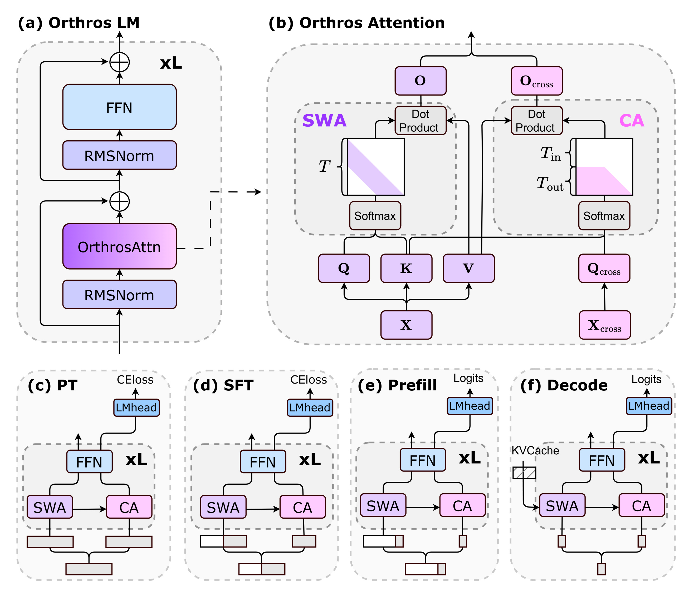
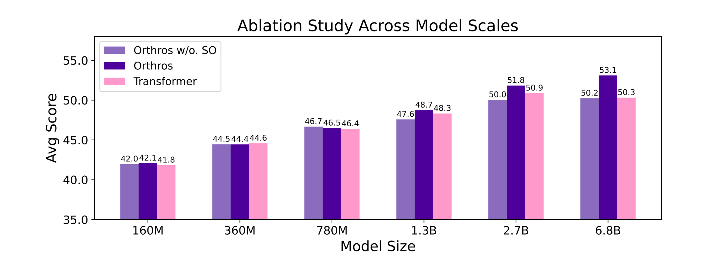
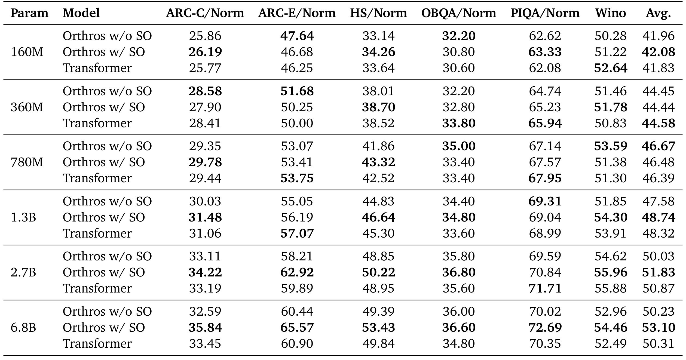
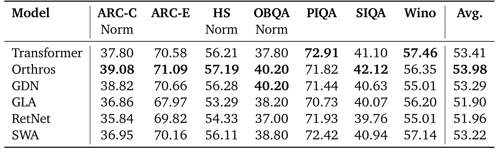
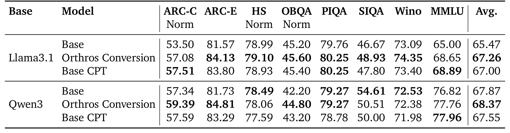
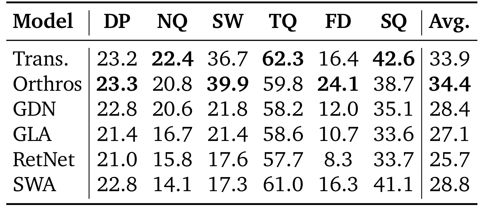
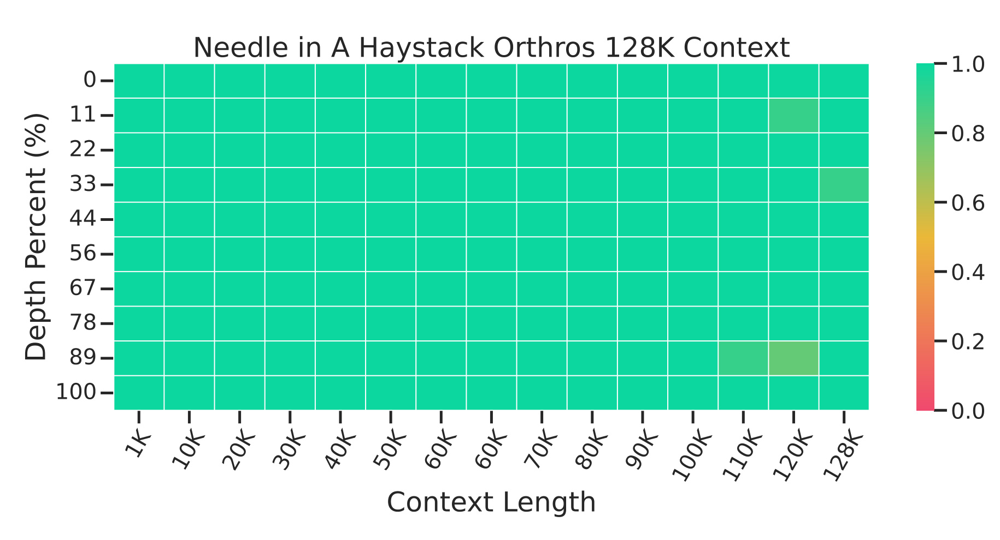
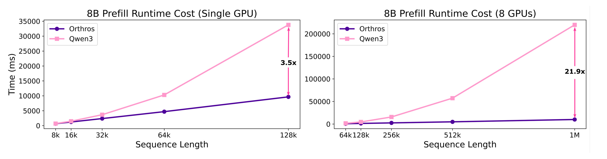
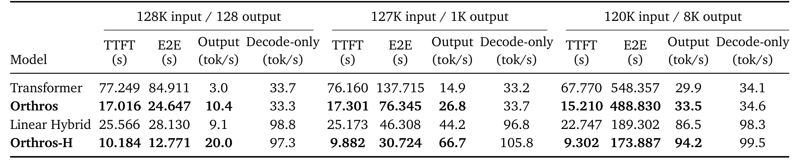

Orthros：按预填充与解码阶段分配全局注意力
论文：Orthros: Phase-Aware Heterogeneous Attention for Efficient Transformers。作者：Yuhong Chou、Zehao Liu、Yuqi Pan、Qian Liu、Xianwei Chen、Zhongzhu Zhou、Jibin Wu。第一作者主要机构：香港理工大学；合作机构：中国科学院大学、悉尼大学，另有独立研究者。arXiv v1 公开时间为 2026-10-09，PDF 内部落款为 2026-10-07，两者并非同一日期口径。论文入口：arXiv:2610.13735。代码状态：本轮未核验到独立论文代码仓库。精读日期：2026-10-14。以下页码指原始二十页 PDF，数值来自原文表格，工程迁移讨论明确作为分析。
Orthros 将输入资料的局部处理与答案的全局读取拆成同一层内的两个角色，以训练时额外计算换取长输入短输出场景的预填充效率。理解其价值需要同时区分质量、训练适应成本和请求各阶段延迟。
线性和滑动窗口注意力会削弱上下文召回；为补偿这一缺陷插入全注意力层，又使长上下文处理仍受二次复杂度瓶颈限制。
1. 背景和问题
论文关注的不是一个孤立注意力算子的乘法数量，而是长输入、短输出的自回归服务为什么要让每个输入位置都付出完整全局交互成本。仓库级代码理解、多模态输入和多轮智能体往往把大量资料作为提示送入模型，输出却只是一个决定、简短答案或工具参数。标准因果 Transformer 在预填充时为所有提示位置计算注意力，越靠后的位置需要读取越长历史，累计代价随序列长度平方增长。那些位置中大部分不会直接接受语言模型输出头的监督，服务最终只需要最后一个提示位置启动生成。作者因此提出：输入资料的组织与真正答案的读取，是否必须使用同样的计算方式？
理解问题需要先区分算力、缓存和信息通路。全注意力让当前位置的查询直接与此前所有键比较，再按权重汇总值，因此具备细粒度访问历史位置的通路；代价是预填充期间存在大量两两比较。滑动窗口注意力把每个位置的可见范围限定为固定窗口，使全序列计算随长度线性增长，但常规使用时较早的键值可能被丢弃，后续查询无法直接读取窗口外证据。线性注意力把历史压进固定大小状态矩阵，保留的是累积摘要而非所有历史键值，空间和时间更有优势，却要依赖有限状态区分越来越多细节。这些方法的效率来源不同，召回受损原因也不同：一个是直接可见范围缩小，一个是大量细节进入共享压缩状态。Orthros 选择保留历史逐位置键值，承担缓存成本，以避免上述信息访问通路消失。
工业中常见的混合架构会穿插少数全注意力层，让高效层完成大部分计算，再由全局层补足远程读取。这样的设计能大幅改善实际延迟，但只要某一层仍对所有输入位置做全注意力，随着输入极长，该层的二次项就继续主导总成本。减少全局层比例主要改善常数，而不会自动把总体复杂度改成线性。这里的批评具有特定边界：它讨论的是长输入情况下的渐近增长，不意味着混合网络没有工程价值，也不意味着所有规模下都比纯高效模型慢。实际系统还受内核、并行、显存和请求分布约束。作者在最后也构造 Orthros-H 与线性混合网络比较，说明阶段解耦与层间混合可以组合，而不是互斥方案。
另一条相关路线是解码器—解码器架构。前半网络用高效自注意力建立一个共享缓存，后半网络通过全局交叉注意力读取这个缓存；没有生成时可以跳过后半部分。论文第二节指出两个约束：网络后半依赖单份共享缓存，跨层信息差异被压缩；宏观分段同时限制后半引入需维护状态的模块，否则预填充提前退出逻辑会被破坏。Orthros 的替代方案在每层内部建立角色分工，每层仍保留自己的键值，基础流负责局部上下文，输出流负责全局读取。这样既不用大范围重排网络，也不要求一半层共用同一历史表示，对已有模型转换较友好。然而它的输出流能读到的仍是局部处理产生的键值，不能简单声称表示与原始全注意力模型完全等价。
阶段划分之所以可能有效，还来自硬件瓶颈变化。预填充大量 token 同时参与矩阵运算，通常有更强计算密度，二次注意力容易成为显著负担；逐 token 解码一次只处理少量向量，权重和历史缓存读取可能成为主要成本。如果增加少量向量计算但不额外复制大块权重，计算增量有机会被已有内存访问延迟掩盖。作者借此让生成步骤维护一对相同来源、不同功能的 token：基础 token 更新局部历史，输出 token 执行全局读取。这里所谓阶段异构，不是推理时临时切换成未经训练的新模型，而是在统一架构中通过输出位置数量控制两个分支的工作量。训练也用同样的角色分解，因此要为更多输出位置维护额外计算。
论文的主张应拆为三项独立判断。第一，保留全局读取的模型是否仍能维持一般语言能力及上下文召回；第二，已有基础模型能否通过继续训练适应这种分工；第三，预填充降低的成本在实际服务中能保留多少收益。仅有复杂度证明不能回答质量，仅有常识任务平均分不能证明长程检索，仅有百万输入的预填充曲线也不能说明长生成更快。作者提供从头训练、转换、召回、预填充及端到端实验，对这些判断分别给出证据。读这篇论文时最需要防止的误读，就是把一百万 token 条件下的预填充峰值当作所有任务、所有硬件、整个请求的固定加速比。
对推荐研究而言，这个问题与长期用户行为、内容序列和生成式推荐有潜在联系：系统可能读取大量历史却只生成少量候选标识或解释。阶段分工提示我们评估“历史表示如何建立”和“当前意图如何读取历史”各自的计算预算。但论文没有推荐数据集，没有点击或转化率，也没有在线排序实验，这一联系属于研究启发。若任务要求每个行为位置都生成监督目标，训练仍会维护大量输出流；若必须快速给出长串候选或长推理轨迹，解码份额又会上升。它最直接服务的是输入占主导的生成式工作负载，能否迁移到非生成排序或高并发推荐服务，需要新的任务定义、缓存预算和实测结果。
论文还刻意保留既有模型改造路径。它不要求先训练全新的编码器，也不通过外部检索系统缩短输入，因此转换实验可以直接检验注意力替换是否保留已学习能力。这种实验设计降低了研究方向与已有模型资产脱节的风险，但模型内部表示已经改变，预训练权重只能作为初始化。是否能在更小的数据预算适应，是否需要重新做对齐，原文并未给出充分答案。
2. 方法
2.1 Orthros 注意力：基础流与输出流
原文第三节按注意力定义、训练推理方案、复杂度分析展开。先设输入基础向量为各位置的表示，额外保留输出位置专用向量。输出位置从最后一个提示 token 开始，因为这个位置负责预测第一个生成 token；随后各生成位置继续预测下一 token，末位可预测结束标记。这样的边界避免把“输出流长度”误解成简单截取已经输出的字符数量。基础流为所有位置生成键和值，输出流只生成全局查询，不向历史缓存再加入第二份键值。两流共享查询投影矩阵，但用独立的逐维缩放和偏移区分查询功能，新增的是轻量向量而非完整两套矩阵。
符号解释：基础表示为 $x_i$，对应输出专用表示为 $x'_i$；$W_Q,W_K,W_V$ 是投影矩阵；$\alpha,\beta$ 与带撇号的两向量分别属于基础流和输出流；$\odot$ 是逐元素乘法；$q_i,q'_i$ 是不同角色查询，$k_i,v_i$ 为共享键值。输出流与基础流虽然在嵌入时复制同一位置，但经过若干层不同注意力后会形成不同表示，仿射变换为这种分工提供额外适应空间。
符号解释：$t$ 是当前位置，$w$ 为固定滑动窗口大小，$d$ 为注意力头维度；$o_t$ 是基础流输出；分子是窗口内值的加权和，分母是相同窗口的指数权重归一化。窗口决定当前位置的局部交互范围，却不要求删掉所有更早位置的键值，因为输出流仍需访问它们。
符号解释：$o'_t$ 是输出流全局读取结果，$T_{\rm in}$ 表示不承担预测任务的前缀长度，$T$ 为基础序列总长度；输出流只在指定位置存在，但可以读取因果边界内的所有基础键值。撇号表示功能流区别，不是未来信息。所有基础位置做局部注意力，只有真正输出位置做全局交叉注意力，就是二次交互被减掉的大部分来源。

图一把注意力内部与整体骨干放在同一张原图中，上半左侧仍是熟悉的归一化、注意力、残差和前馈网络，没有把模型切成前后两个独立解码器。右侧紫色局部分支的查询、键、值都来自基础表示，粉色全局分支的查询来自输出专用表示，但箭头指向相同的键值。理解这条连接尤其关键：全局读取不会让输出流自身变成第二套缓存，也不会因为预填充局部化就丢掉基础历史。图中全局注意力矩阵上方空白，表示此前上下文位置不执行输出查询，下方粉色区域才对应预测位置；因果三角边界说明每个预测仍不能看见未来。下半四幅示意分别说明预训练整段复制、监督微调只复制响应位置、预填充只复制末位、解码只处理一对 token。它们是同一机制不同工作量，而不是四套参数。图中的前馈网络位于两流后面，意味着输出流除了注意力，也承担逐 token 的前馈与归一化开销。由此可以看出为何训练代价增加，以及为何单独统计注意力浮点运算不足以完整估算资源。读图还应注意层数标记：每层都有局部历史和全局读取配合，因此保留了逐层缓存表示差异；这与只共享一层缓存的宏观双解码器设计不同。该图支持结构定义，不能单凭箭头证明召回质量或延迟，后面还需结果表和系统测量验证这些推断。
图中的共享键值只是同一层两种查询共用，并非跨整个网络只保留一份缓存。基础流在每层都会被局部注意力和前馈更新，下一层键值来自相应层的基础表示；输出流则在每层反复读取这些表示。因而“保留历史”描述的是位置通路，不能理解成缓存存放原始文本。多层局部变换可能把邻近上下文融入键值，但远距离全局聚合主要发生在输出流，二者承担的表征责任不同。
2.2 训练与推理：用输出位置数量统一四个阶段
算法一先在序列维度拆开基础表示和输出表示，只为基础表示生成键值，再对两组查询分别调用窗口及全范围注意力，最后拼回序列并共享输出投影。算法二在网络入口复制承担监督的位置，整段向量依次经过相同层数的注意力、归一化、前馈和残差，最终只提取输出流进入输出头。拼接发生在 token 维度，因此逐 token 运算天然支持额外位置，无需为前馈模块定义另一套参数。它也避免让基础流全局化后再生成下一层基础缓存，从而保留预填充线性条件。
符号解释：$X$ 有 $T$ 个基础位置，$T_{\rm out}$ 为输出位置数，$Z^{(0)}$ 长度为两者之和；$L$ 是网络层数，$\operatorname{Block}$ 包括论文算法二中的双流注意力与残差前馈，$Y$ 为最后提取的输出专用隐藏状态。这是算法二的压缩表达，切片按原算法零起始索引理解；读论文时应同时区分位置编号与编程索引。
符号解释：四行分别是因果预训练、仅响应受监督的微调、提示预填充和单步解码的配置；$T_{\rm in}+T_{\rm out}=T$ 描述当前处理的基础段。解码一行中的 $T=1$ 是本步新 token 数量，历史缓存长度仍可很大，不能据此把全局注意力复杂度当成常数。预训练每个位置都承担下一个 token 预测，所以整个基础序列被复制；监督微调只复制有损失的响应段。预填充先处理所有提示基础位置，再让最后位置的输出流从全历史检索，得到第一次预测；解码随后把刚生成 token 拷成两种角色，一份更新缓存，一份继续预测。
这种训练与推理一致性指算法与角色划分一致，不意味着训练和服务执行量一致。模型在预训练中学习每个输出位置如何从基础缓存找信息，在服务中只为当前预测位置创建对应输出向量。若把最后提示 token 排除在输出角色之外，第一步预测会缺少全局读取；若输出流也生成缓存，又会改变结构定义。代码实现需要对输出位置的因果掩码、位置编码、历史索引和最终损失选择保持一致，不能把拼在末尾的物理张量顺序直接当成真实文本位置。原文提供算法但没有独立代码链接可核验，位置编码及推理框架具体集成细节仍需要复现者进一步确认。
2.3 复杂度分析：短输出优势与缓存边界
论文把成本分为窗口注意力、全局交叉注意力和逐 token 投影三项。此处分析将网络宽度保留在符号中，便于区分减少两两交互与额外逐 token 运算。对于固定网络层数，整体增长可写为：
符号解释：$C$ 表示渐近计算量，$W$ 是窗口大小，与前式 $w$ 同义；$d_{\rm model}$ 为模型隐藏宽度；三项分别来自局部注意力、输出流全局读取和两流的线性投影。逐 token 前馈也随位置数量增长，式子强调主导增长阶而非精确浮点数。作者在窗口远小于宽度时用投影项支配窗口项，讨论主要瓶颈。
符号解释：$O(1)$ 表示输出位置数有常数上界，$o(T)$ 表示相对输入总长增长更慢。固定宽度下，短输出可实现对输入长度线性增长；次线性输出则让交叉注意力低于二次阶。这一推论适用于长上下文、短生成，不能把“输出远小于输入”当作所有自回归任务的恒常事实。这里的收益来自只为少量预测查询扫描历史，而历史键值本身依然逐位置保存。
符号解释：$\Theta(T)$ 表示输出位置数与总长度同阶，例如整段因果预训练。此时全局读取重新有二次项，Orthros 并没有让预训练整体变成线性；基础与输出双流还会增加逐 token 计算。线性预填充不等于线性缓存，也不等于线性长输出生成。 原文第十二页明确把键值缓存内存效率列为尚未解决的问题。
硬件论证是增加一对向量的计算可以在低批量解码中被权重加载延迟掩盖，共享投影矩阵避免重复加载两套大权重。这个结论依赖当前阶段确实受内存输入输出限制；高批次、宽模型、专家网络或带复杂路由的服务可能改变瓶颈。作者特别指出混合专家模型若把一对 token 分到不同专家，额外权重读取会扩大内存压力，因此需要专门路由设计。这是从结构到硬件的真实限制，不能用同一张显卡的小批次结果跳过验证。系统评估最终要同时测首 token 时间、逐步解码吞吐、端到端延迟及缓存驻留量。
3. 实验结果
3.1 规模与仿射变换消融：收益不是每个尺度都一致
第一组实验固定训练预算为 10B token，长度 2048，全局批次 0.25M token；模型覆盖 160M、360M、780M、1.3B、2.7B 和 6.8B。附录表五给出 AdamW、学习率 $3\times10^{-4}$、余弦调度、1500 步预热、权重衰减 0.05、梯度裁剪 1.0 和种子 42，训练使用 H100 80GB。Orthros 默认窗口 128。图二比较完整模型、去除查询缩放偏移的变体与 Transformer，目的在于验证同一共享查询矩阵上角色专用仿射是否有价值；它不是推理吞吐对比，也不是固定浮点训练成本对比。

图二横轴是模型规模，纵轴是平均任务分数，每组柱形对应去仿射变体、完整 Orthros 和 Transformer。小规模的三柱高度很接近：160M 完整模型为 42.08，Transformer 为 41.83；360M 则是 44.44 对 44.58，完整模型略低；780M 完整模型 46.48，去仿射为 46.67，也说明额外变换并非所有条件都稳定增益。明显差距出现在更大模型：1.3B 为 48.74 对 48.32，2.7B 为 51.83 对 50.87，6.8B 为 53.10 对 50.31。六点趋势支持架构随规模增长仍具有竞争力，并显示查询角色分化在大尺度更重要，但不足以构成完整缩放定律。所有尺度只用同样的 10B 数据，最大模型相对训练不充分程度与小模型不同；图中也没有误差条或多种子区间。因而不应把末端差距外推为任意训练预算下必然扩大。完整模型相对去仿射的差距，在6.8B为2.87分，提示共享矩阵加轻量变换能缓解两个角色强行共用查询空间的冲突；具体影响哪些任务，还需要看附录逐项数字。图的纵轴从35开始，也应避免凭视觉柱高差夸大实际平均分差异。
这张图也帮助界定规模实验能回答的问题。固定训练文本量意味着每个模型看到同样数量的学习材料，并未控制各架构的总矩阵运算或加速器占用时间；完整模型通过双流增添了表示处理量，不能据平均分推断训练性价比。横轴从小到大不是同一模型逐步扩容的连续轨迹，而是独立规模的训练配置，学习率与数据预算可能并非各尺度最优。若想声称某一结构具有更好缩放特性，至少需要在多种训练量下观察损失和任务表现，并确认额外查询变换的增益不会只是欠训练条件下的补偿。图二最稳健的用途是检验结构没有随着参数增长突然失效，以及指出大模型的角色分工值得优先消融。

附录表七让图二中的平均变化可以追溯到任务。6.8B 时完整 Orthros 的 ARC-C 为35.84，对比 Transformer33.45；ARC-E65.57对60.90；HellaSwag53.43对49.84；PIQA72.69对70.35；WinoGrande54.46对52.49。优势在多个列上出现，平均53.10因此不是仅由一个异常任务托起。去仿射模型平均50.23，与Transformer50.31接近，说明大规模结果里轻量角色变换有实质作用。相反，360M去仿射在ARC-C和ARC-E为28.58与51.68，高于完整模型27.90与50.25；780M去仿射平均46.67也高于完整模型46.48。这样的反例要求把“仿射有帮助”写成总体趋势而非每个单元格保证。表七只列六项任务，其表头为若干归一化准确率和Wino准确率，平均值不能与表一七项任务平均不加区分地直接比较。正文规模实验描述还提及SIQA，但表七并未提供这一列，精读采用实际可见表格口径，不自行补入缺失数字。一个适合复现的判断是先保持相同训练预算与窗口，再检查完整模型是否在较大尺度形成一致改善；如果小模型收益不稳定，应报告这种异质性。作者只有种子42的设置且没有置信区间，因此这些小于一分的差距尤其需要谨慎解释。表五配置已在文字转写，不再展示重复的配置截图。
完整逐项数字还显示，平均列对少数大幅变化具有敏感性。更大规模的ARC-E与HellaSwag增益明显，而小规模OpenBookQA和Wino并非单调改善，提示不同任务对查询角色分化依赖不同。表格中的参数组是相同规模下的架构对照，读者不应跨组挑最高列拼接成一个不存在的模型结果。复现时保留归一化指标尤其必要：它可能调整选项长度带来的偏好，与原始正确率并非同一统计定义。验证平均分还应以论文提供的列数算均值，避免把正文提及但附录没有显示的任务算进去。若要分析角色变换是否缓解共享查询冲突，可进一步检查两组查询的尺度、偏移分布与检索注意力，而表七本身仅提供下游效果关联。
3.2 从头训练：一般语言能力保持在相近水平
第二组将六种架构都训练为1.3B，使用FineWeb-Edu的100B token，序列长度2048、批次2M token。比较对象包括Transformer、Orthros、GatedDeltaNet、Gated Linear Attention、RetNet和纯SWA。Orthros窗口128，而SWA基线窗口512，不应把窗口完全相同视为比较条件。作者使用常识推理任务衡量一般能力，实际表一在ARC-C、HellaSwag与OpenBookQA表头标注归一化口径，其他列需按原表保留，不能统一重新解释为同一准确率。

表一中Orthros平均53.98，Transformer53.41，GDN53.29，GLA51.90，RetNet51.96，SWA53.22。相对Transformer是0.57个平均分点，合理结论为维持强竞争力并取得小幅平均优势，不能写成全任务显著领先。逐列看，Orthros在ARC-C39.08对37.80、HellaSwag57.19对56.21、OpenBookQA40.20对37.80、SIQA42.12对41.10有所改善，PIQA则71.82低于72.91，Wino56.35低于57.46；OpenBookQA40.20还与GDN持平。表中粗体强调各列最好结果，但平均得分的排序不会消除任务取舍。从机制来看，这说明局部缓存加输出全局读取没有在常识评测上造成明显整体退化，支持继续讨论召回与系统性能，而并非证明每项语言能力等价。相同token预算也不等于相同训练计算量，Orthros维护输出专用位置，前馈与投影可能更贵；如果以训练成本为约束，排名还需要单独评估。另一个容易混淆的点是同为1.3B，图二使用10B训练，而本表使用100B，因此48.74与53.98的差别包含训练量和任务集合变化，不能归因于某个注意力实现升级。纯SWA更宽窗口提供更强局部范围，却仍无法直接替代全局读取，这一点还将在召回表中更清楚地出现。作者未报告这里各项分数的统计显著性，平均微差应视为有限预算下的观察结果。
从实验结构看，先测一般常识再测召回可以避免一个过度简单的解释：模型只是用更低成本记住输入，却失去基础语言建模能力。表一先说明整体水平保持，表三才检验保留历史通路是否改善特定信息访问。两张表不要求架构在所有列都胜出，也不应该用一个平均列覆盖另一组任务的退化。面对真实应用，可以按目标任务的重要性预先设权重，而不是在看到结果后重新选择有利任务。还应记录纯窗口基线更宽的窗口配置，因为增加局部范围会改变其资源消耗和可见信息量。作者选择更小窗口的Orthros仍取得相近水平，说明输出全局读取可能替代部分局部窗口扩大的需求，但没有窗口大小曲线，无法确定最佳窗口或把固定一百二十八视为跨数据通用配置。
3.3 已训练模型转换：必须使用同数据续训作为对照
第三组把Llama3.1-8B和Qwen3-8B-Base的原始注意力替换为Orthros，并继续训练80B token。数据以高质量Common Crawl为主，混入受限比例数学及代码；附录表六明确转换和原架构续训都使用32768长度、8M token全局批次、10000步、学习率 $3\times10^{-5}$、500步预热、权重衰减0.1、种子42和激活检查点。模型隐藏宽度4096，Llama32层、Qwen36层。这里的转换不是无需训练的算子替换，80B虽相对基础预训练量可能较少，对复现者仍是显著资源投入。对照分为原始检查点和同样80B续训，后者更能隔离额外数据带来的收益。

表二的Llama平均分从原始65.47到转换67.26，同数据原架构续训为67.00；转换相对原模型提升1.79，但相对公平续训对照只有0.26。Qwen原始67.87、转换68.37、续训67.55，转换相对续训提高0.82，相对原始只提高0.50。比较架构转换必须优先看同预算续训列，否则把整个改善都归因于结构会放大效果。逐任务差异仍存在：Llama转换的MMLU68.65低于续训68.89，ARC-C57.08也低于续训57.51；Qwen转换MMLU77.76低于续训77.96，SIQA50.51低于原始54.61。与此同时Qwen的ARC-C59.39、ARC-E84.81、OpenBookQA44.80高于相应原始与续训值，平均能够保持优势。该表支持已有强模型能学会新的表示分工，并没有证明无需改变任务表现或更少数据必然成功。原文称转换数据高效，应理解为作者相对于重训大型模型的判断，表里没有转换数据规模曲线来确定最低预算，也没有不同随机种子的分布。附录表六确认了主要训练设置，使这个80B条件可以追溯；但实际训练小时、峰值显存与总能耗未成为本表比较轴。对于拿已有模型改造的团队，这个结果更适合用来估计适应可行性和质量风险，而不是直接把转换当作无成本的部署开关。
两个模型家族共同出现正向平均差值，降低了只对单一初始化有效的疑虑；然而它们同为八十亿规模，数据配比和训练长度又相同，不能据此推断更小、更大或多模态模型都同样容易适应。转换后相对同架构续训的变化，可能来自新注意力结构与训练方案的共同作用，论文没有把额外输出计算、角色仿射以及局部缓存拆成更多独立因素。对表中的原始基线，保持其公开检查点与训练后模型的相同评估流程很重要，否则续训收益与测量差异可能混合。任务回退也说明转换可能重分配模型擅长的能力，不应只按平均通过门槛就认为全部旧能力保留。可审查的部署标准应同时设定关键任务退化上限和整体收益条件，再决定是否继续对齐与压测。
3.4 上下文召回：真实任务与针检索提供不同证据
论文用1.3B从头训练模型测试DROP、NarrativeQA、SWDE、TriviaQA、FDA、SQuAD；这些任务要求根据输入证据回答或抽取内容，对有限状态或仅局部可见的机制构成更直接考验。表三中平均数并不能表示所有任务使用同一种评价单位，应保留任务自身指标，重点看同列架构比较。随后又用转换后的8B Qwen模型做长上下文扩展和针检索，这是另一个模型规模、另一个训练过程，不能与1.3B表格拼成同一个统一评测。

表三Orthros平均34.4，Transformer33.9，GDN28.4，GLA27.1，RetNet25.7，SWA28.8。它相对纯高效架构有较清楚差距，尤其SWDE为39.9，对GDN21.8、GLA21.4、RetNet17.6、SWA17.3；FDA为24.1，对Transformer16.4和SWA16.3。这与保留逐位置键值、为输出做全局读取的设计动机一致。但Orthros并非逐列胜过Transformer：NarrativeQA20.8对22.4，TriviaQA59.8对62.3，SQuAD38.7对42.6；DROP23.3对23.2近乎持平。平均领先0.5可能掩盖具体能力变化，部署时要看与目标任务更接近的列。SWA在TriviaQA61.0及SQuAD41.1接近Transformer，却在SWDE17.3明显下降，也说明召回缺陷不是每个任务以同样幅度出现。该表证明架构具备避免大幅召回退化的能力，不能证明基础缓存与全局编码缓存信息完全相同。全局查询是否能找到、比较和组合局部历史表示，要受训练和任务结构影响。正文把这些看作召回密集基准，但未给出每个任务的原始预测、错误分类或置信区间，因此可以判断相对表现，却不能进一步断言所有证据位置或多跳情形都安全。附录关于召回模型规模的文字有8B表述，而正文表三清楚写1.3B；此处以表三与第四节的明确描述为准，保留两组实验区分。
同表各模型在任务间差距有明显结构：有些数据更偏短答案证据提取，有些涉及复杂叙事或离散推理，窗口机制对它们的损害并不一致。因此“召回”在这里是任务集合的统称，而非一个完全可分离的单一能力指标。输出查询能够接触所有位置，为召回提供必要通路，却仍要把正确证据识别为有用值，且通过后续层组合成答案。若多个事实各自被局部编码但关系跨越长距离，可能仍有不同于标准Transformer的归纳偏置。需要通过证据跨度、干扰数量和多跳深度切面来定位失败，而不是把所有错误都归结为缓存遗漏。表三也没有同样长度下的内存吞吐数据，所以质量优势不能直接换算成服务性价比。

图三横轴是上下文长度，纵轴是针在文本中的深度比例，颜色表示该格检索表现；大部分格接近最高色阶，支持原文“近乎完美”措辞，但少数长长度格的颜色有变化，不宜改写成严格百分之百。这里使用的是Qwen3转换的8B Orthros，再在ProLong数据上做20B token长上下文扩展，额外训练本身是成绩条件。图中存在重复60K刻度，是原始图的标注现象，笔记保留原图，不将它补成未经验证的新长度点。针检索检验一个明确事实在不同位置是否可以找到，对长距离直接读取很有价值；它不要求复杂文档整体理解、跨多条证据推理或抵抗大量相似干扰，因此不能替代真实任务评测。尤其不能把128K召回结果外推到百万长度：百万输入仅出现在效率曲线，质量测试没有在同一长度给出证据。两者分别说明“较长范围有检索能力”和“更长输入有预填充效率”，它们并未形成同一点上的速度质量联合证明。
3.5 预填充与端到端：收益由输入输出比例决定
预填充曲线对比8B Orthros和Qwen3，使用高性能内核的FLA风格实现。单卡输入8K到128K，八卡输入64K到1M，附录说明多卡启用序列并行。由于两图硬件数量与长度范围不同，只能在各自图内进行比较；也不能把这里的实现延迟与随后SGLang端到端首token时间逐点混合。原文二十一点九倍是八卡百万token输入端点的预填充加速，属于最强、最特定条件的结果。

图四左侧时间单位明确为毫秒，单卡128K处标出3.5倍；右侧八卡1M处标出21.9倍。紫色Orthros曲线随输入长度增长更平缓，粉色Qwen曲线在长长度上抬升更快，与削减全位置全局交互的复杂度方向一致。短输入两条曲线距离较小，说明收益并不是固定常数，且投影、前馈和内核启动开销在短序列可能占更大比例。图没有原始计时表，不宜从曲线粗读出精确微秒数字再作额外计算；笔记采用图上标注的倍率及可见趋势。八卡端点提升并不说明每卡都具有同样提升，也不构成跨设备强缩放实验。为了把它用于部署判断，需要同时确认测量是否包含缓存创建、同步与并行通信，以及相同输入长度的峰值显存。作者的结果展示线性预填充架构可在极长输入释放明显优势，但本文不会把这张曲线解释为端到端二十一点九倍。保留历史缓存的内存成本也不会因为曲线线性而消失，若显存限制必须缩小批次，实际吞吐可能出现新的权衡。与后续端到端表共同阅读，才可以确定用户等待时间能改善多少。
这里两条曲线的分离发生在预填充，意味着许多输入位置免去了全局查询，但它们仍需经过每一层逐token模块并建立缓存。在真实请求中如果历史缓存可复用，部分输入不会每次重新处理，常规Transformer的预填充瓶颈也可能减轻；论文图中是完整输入处理基准，未展示前缀复用条件。若多个请求共享前缀、持续追加新内容，必须按新增文本量和缓存可复用程度重新估算节省。另一方面极长上下文如果需要跨卡通信，低复杂度注意力有机会减少部分计算等待，却不代表通信和缓存调度也同步减少。曲线因此更适合建立压力测试长度范围，帮助决定在哪里增加实测，而不适合作为所有生产请求的统一收益系数。

表四使用相同SGLang引擎、单H100、批次二和Triton注意力后端，比较Transformer、Orthros、Linear Hybrid与Orthros-H。表头明确三种工作负载分别为128K输入/128输出、127K输入/1K输出、120K输入/8K输出，总长度约128K，而正文关于“输入输出长度128、1K、8K”的一句描述不够清楚；这里采用表头精确口径。第一组Transformer首token时间77.249秒、端到端84.911秒；Orthros为17.016与24.647秒。按表内数值计算端到端约3.45倍，输出吞吐3.0到10.4 token/秒，而纯解码吞吐33.7到33.3几乎不变。中间组端到端137.715到76.345秒，约1.80倍；最长输出组548.357到488.830秒，仅约1.12倍。输入仍长，但生成越多，预填充省下的时间占比越小。该表是论文阶段分工论证最直观的服务证据：保留全局解码而额外处理双流，并未在该小批次条件下明显拖慢纯解码，但主要收益确实来自首token之前。表中的Output吞吐按总生成数除端到端时间，包含预填充等待；Decode-only只描述生成阶段，两列不能当作同一吞吐概念替换。批次二也解释为什么总输出吞吐与单请求生成速度不会直接一致。
Orthros-H在层间以全注意力与线性层1:3混合，原文说明GDN作为交叉分支时查询绕过卷积模块。其第一组端到端12.771秒，对Linear Hybrid28.130秒约2.20倍；最后一组173.887对189.302约1.09倍。两种混合模型纯解码吞吐约97到106 token/秒，明显高于保留每层全局解码的两种模型。这个对比说明若目标主要是长输出，改变解码架构也可能比只优化预填充更关键；不能用Orthros和混合模型的速度差直接归结为同质量架构胜负，因为表四没有同时提供Orthros-H的完整质量评测。端到端表只覆盖一个硬件、小批次、有限输入输出组合，仍需高并发、持续批处理与多租户情况下的测量。
首token时间还反映一次请求开始生成的等待，其降低对于交互式短响应尤其可见；端到端时间则反映完整输出等待。两者的优先级应由应用确定。例如工具调用只有少量参数时，更低首token和整体延迟都可能重要；离线长生成可能更看重纯解码吞吐。表四给出这几个指标，恰好避免让一个吞吐平均值掩盖阶段差异。
4. 总结
Orthros 提供了一个清晰的计算分配原则：大量输入位置只负责形成局部、逐层、逐位置的历史键值，少量真正预测位置再执行全局读取。它在单层内部定义基础流和输出流，共享大投影矩阵并增加轻量查询仿射，保留传统残差前馈骨干；统一训练方案确保推理所用输出角色已被学习。相较固定层间插入全注意力，阶段分工把成本与输出位置数联系起来，这对长资料输入和简短响应最有意义。质量证据支持强竞争力与可转换性，效率证据支持预填充显著改善，但三个结论都有各自实验条件。
最可迁移的认识是把用户请求的输入输出分布纳入架构评价。若业务只需从大量历史里生成几个结构化决定，首token时间可能主导用户体验，Orthros值得进一步研究；若长思维轨迹或批量候选生成占主导，表四已展示端到端收益会衰减。对推荐系统，长期用户行为读取与短候选生成可以借鉴这条分工，但这是待验证方向，本文没有推荐AUC、排序质量或在线实验。保留细粒度历史有利于追溯具体行为证据，却同时占用缓存，不能以输入计算节省代替完整内存预算。
至少四个限制需要保留。第一，预训练每个位置都复制输出流，逐token计算增加，固定token预算不是固定计算预算。第二，历史键值内存效率尚未解决，长上下文高并发服务仍可能先碰到显存限制。第三，转换需要80B token继续训练，128K针检索还增加20B扩展训练；没有最低适应预算曲线，不宜把它描述成开箱即用。第四，全局输出读的是局部基础流表示，常识与召回平均分有竞争力，但某些任务低于Transformer，不保证每种信息组合都等价。第五，解码增量被内存访问掩盖只在特定硬件与批次证实，专家路由、高批量或长输出可能改变瓶颈。第六，未核验独立代码与权重发布，多种子统计、百万输入质量和混合版本质量证据也有限。
后续应优先做三类验证。首先固定训练浮点预算以及相同数据，测从头训练和转换的质量—成本曲线，判断轻量仿射的大尺度收益是否稳定。其次在真实长文档、多针、多跳与相似干扰任务上联合测质量和速度，尤其补齐百万输入端点质量，避免把效率与召回两张不同长度的图合并为承诺。最后在目标服务的输入输出比例、并发和专家路由下测首token、解码、端到端、峰值显存和缓存驻留量，确认双流查询的权重复用在实际部署仍成立。若研究生成式推荐，可把长行为历史和短候选生成设成独立实验，再与窗口及混合注意力做同数据比较；只有看到任务指标与服务成本同时改善，才能判断阶段异构是否适合该应用。
对论文“可能接替Transformer”的展望，应以条件化评价回应：现有数据已经支持其作为输入密集场景的候选架构，但尚未覆盖工业所需的所有能力和资源维度。评价中可以把训练一次的投入与长期反复推理节省放到同一时间范围，估算什么时候额外训练值得，但需要真实请求量及成本参数，论文没有提供统一回本结论。对多轮智能体，还要测历史缓存能否持续复用、工具调用改变上下文后是否需重新预填充，以及输出流状态如何恢复；这些问题比单轮针检索更接近实际部署。